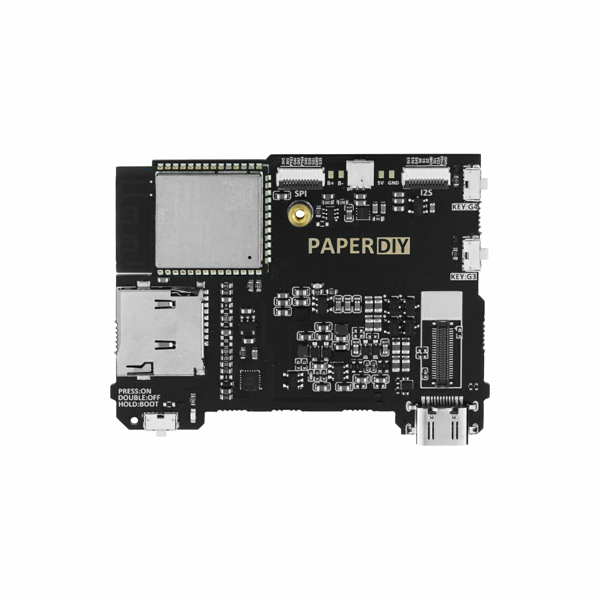
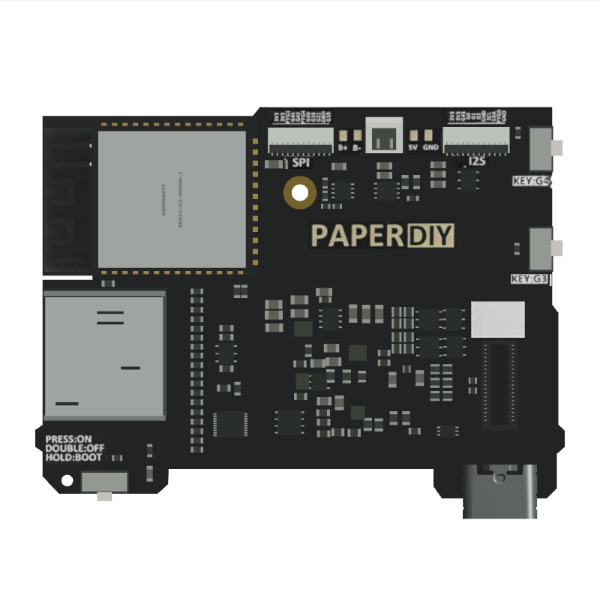
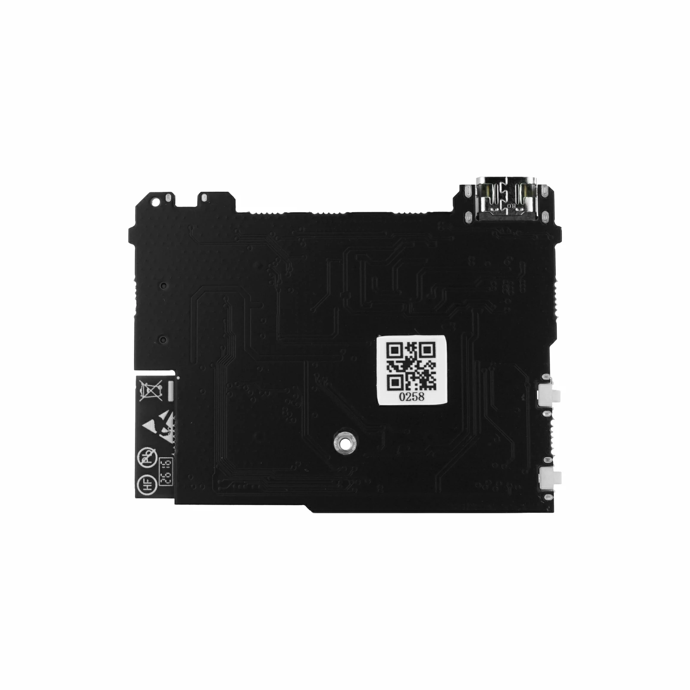
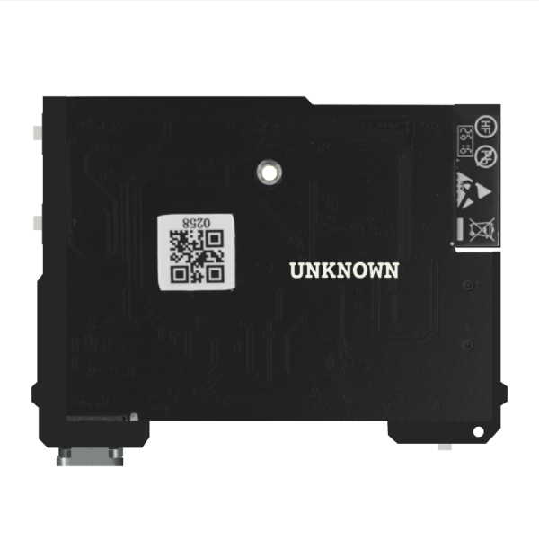
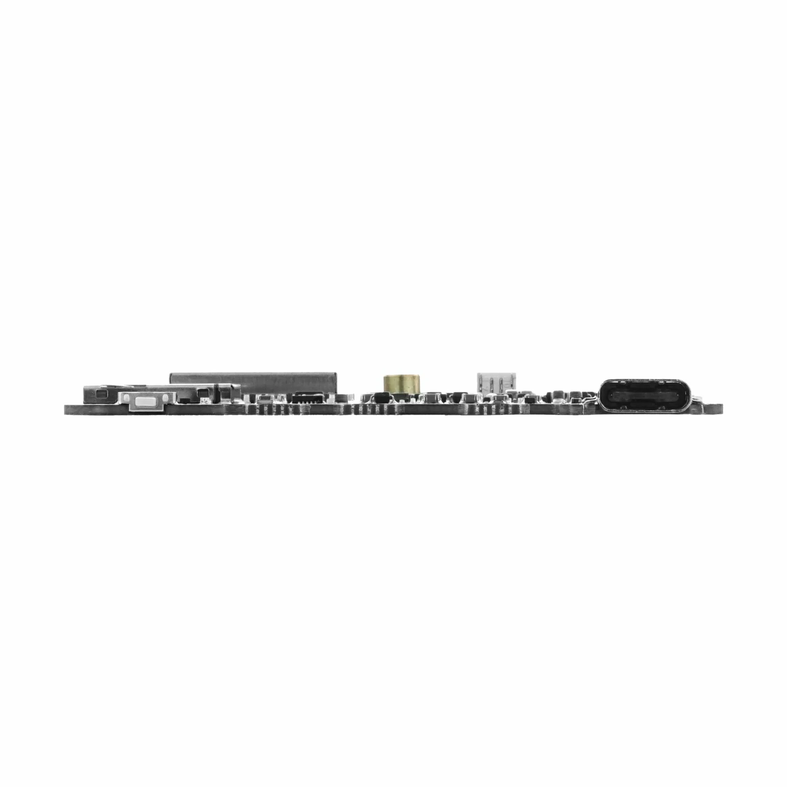
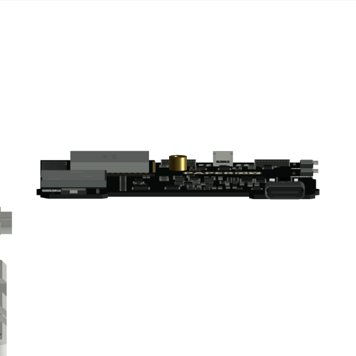
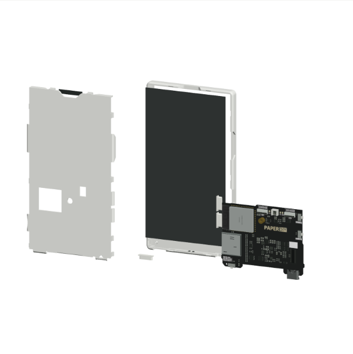
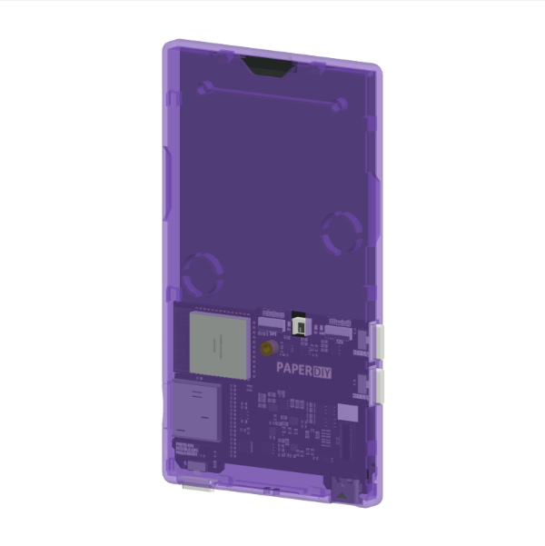

PaperDIY PCB：官方照片与 3D 外观
官方 Assembly Kit 的裸板资料补充 Complete Kit 的外壳 CAD。两个产品页面链接同一份原理图；模型保留原厂外壳和接口 CAD。此页核对可见板形、器件位置与材质，不证明隐藏铜层、器件高度或制造公差。完整来源、像素地标、原图和最终模型哈希见 receipt.json。
元件面

官方照片 06，原图字节未改。基板两侧直边宽 61.15 mm；天线悬伸属于 ESP32 模块。
公开“分开查看”后模型正对元件面。PCB、TF 座、金属罩、FPC 和可确认的 SMT 均为独立立体件；文字使用原图 UV 小区域。反面

官方照片 07 仅在页面中旋转 180°以匹配模型观察方向，原文件未修改。
背面走线外观来自原图，轮廓与孔洞由几何裁切。UNKNOWN 仅指仍未核准的内部层叠及精密封装尺寸；两张照片的可见外观有依据。高度与金属材质

官方端视图 09。独立板厚标注 1 mm，器件最大外伸约 3.1 mm；具体封装高度仍为多视角约束近似。
模型近侧视。ESP32 屏蔽罩和 TF 外壳由现场光照计算反射，不使用整块金属照片的固定高光。整体与展示材质

外壳、显示层与 PCB 分组展开；PCB 上的元件和标识同步移动，复位恢复原坐标。
紫色透明外壳。PCB、金属、插座与显示层保持自身材质。模型中的灰色显示平面仅用于本次几何验收；运行产品时仍使用客体 framebuffer。本次没有扩展已有固件兼容结论。